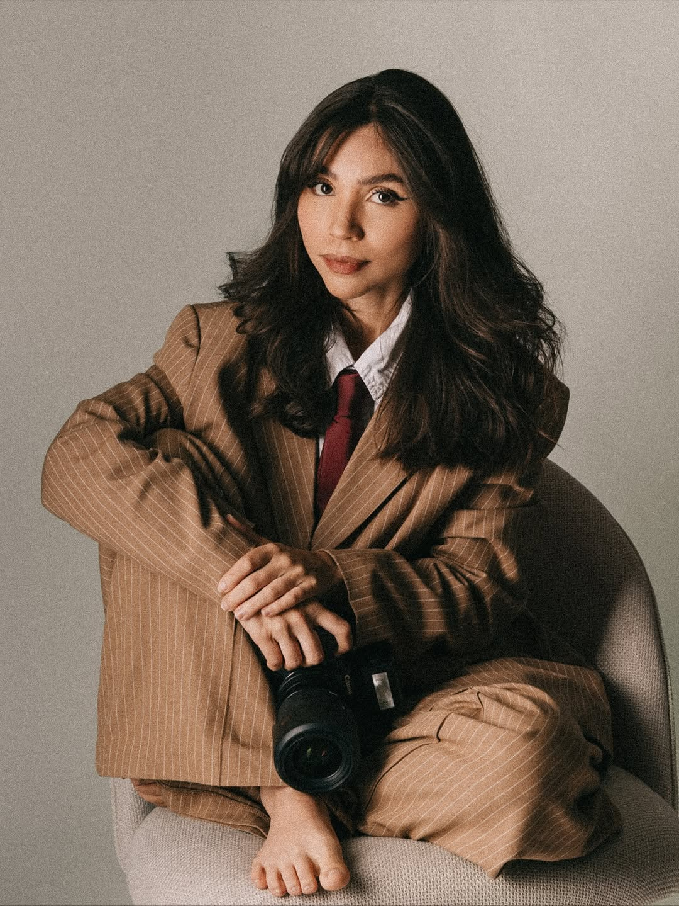

Get to
Know me Better!
"I am 27 years old, originally from Brazil, and have been living in Belgium since 2019. Ever
since I was a child, I have had a passion for photographing people and moments. When I was 17, I
got my first camera, and since then I have been turning my vision into tangible memories."
"As a portrait photographer, I want to make my clients happy and bring them a sense of
fulfillment. I love to show that my heart is in every photo I take. Everything done with love
brings satisfaction; therefore, it is my professional and personal goal that this feeling is
never missing from my work. The camera is my instrument, and with it, I give meaning to
everything around me."
